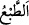
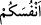
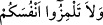

Sikkenin/damganın onda tesiri/iz bırakması dikkate alınarak “__WORD__ denir. Temsil
getirmek/darb-ı mesel de buradandır. Darb-ı mesel, izi/tesiri başkasında ortaya çıkan
bir şeyi zikretmektir. Mesel/temsil ise aralarında benzerlik olan iki sözden birini diğeri
ile açıklamak ve tasvir etmek için başka konudaki bir söze benzeyen bir konudaki
sözden ibârettir.
Ebü’l-Leys şöyle demiştir: “Bu âyet Kureyş’in kâfirleri hakkında nâzil olmuştur.
Onlar bir takım ilâhlara ibâdet ediyor ve ihrama girdiklerinde: “Buyur Allâh’ım, sana
icâbet ettim. Senin hiçbir ortağın yoktur. Ancak sana âid olan, kendisine ve sâhip
olduklarına Senin sâhip olduğun bir ortağın müstesnâ.” diyorlardı.
Sonra Allah temsîlî tasvir ederek şöyle buyurdu:
“Mülkiyetiniz altında bulunan köleler” köle ve câriyeler “içinde, size verdiğimiz”
mal ve sebepler gibi “rızıklarda -birbirinizden” zikredilen rızıklarda emsâliniz olan
hür ortaklarınızdan “çekindiğiniz gibi kendilerinden çekineceğiniz” bu rızıklarda
müstakil olmalarından ve tek başlarına tasarrufta bulunmalarından korkacağınız
“derecede sizinle eşit (haklara sâhip)- ortaklarınız var mı?” yâni, size verdiğimiz
rızıklarda siz ve köleleriniz eşit olduğu, sizinle köleleriniz arasında fark olmaksızın
onlar hakkında sizin tasarrufta bulunduğunuz gibi tasarrufta bulundukları halde bunlarda
onların size ortak olmasına râzı olur musunuz? Yâni siz kölelerinizin elinizde bulunan
iğreti/emânet mallarınıza ortak olmalarına râzı olmazsınız. Halbuki onlar sizin
yanınızda beşer olma konusunda sizin gibidirler, sizin için değil Allah Teâlâ için
yaratılmışlardır. O halde siz noksanlardan münezzeh olan Allâh’a kullukta, zâtî
özelliklerinden birisi Allâh’ın mahlûku olmak, hatta mahlûkunun yaptığı bir şey olmak
olan bir varlığı nasıl O’na ortak koşarsınız?! Çünkü o putları kendi ellerinizle yapıyor,
sonra da onlara tapıyorsunuz.
Bu âyetteki “__WORD__ sözünün mânâsı, “
Kendi kendinizi” yâni bazınız
bazınızı “ayıplamayın.” (el-Hucurât, 49/11) âyetinde olduğu gibi ‘emsâliniz olan
hürlerden’ demektir.
Kâşifî bazı tefsirlerden naklen şöyle der: “Hz. Peygamber bu âyeti Kureyş’in
büyüklerine okuyunca: “Hayır, vallâhi bu asla olamaz.” dediler. Yüce Peygamber: “Siz
kendi kölelerinizi mallarınızda ortak etmiyorsunuz. Pekâlâ nasıl oluyor da Allâh’ın
kulları olan yaratılmışları O’nun mülkünde ortak tutarsınız?” buyurdu.
Halk, köleler gibi başları önlerinde,
Hâlik’ın hükmüne râzı olmuşlardır
Hepsi hem köle hem de efendilerinin emrine mutîdir
Kul ve köleye efendilik yaraşmaz
Âyette kulun mülkü olmadığına delil vardır. Çünkü Allâh’ın bize rızık olarak verdiği
mallarda kulların ortaklığı olmadığını haber vermektedir.